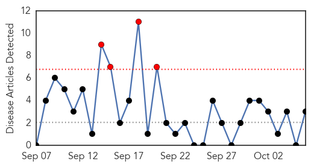
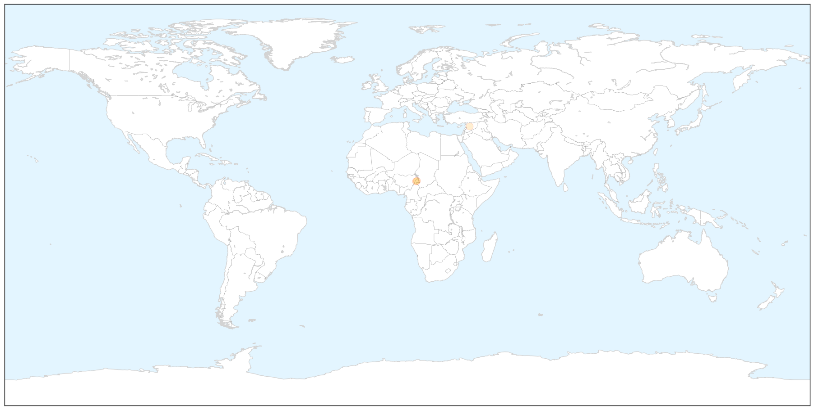
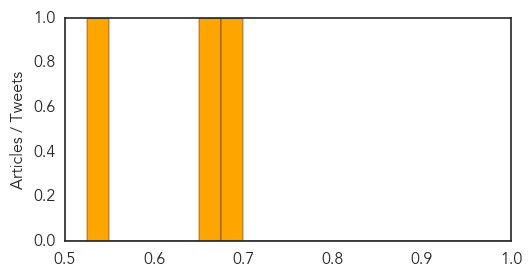

Measles
30-Day Web Trend
4 alerts, 0 warnings

30-Day Twitter Trend
0 alerts, 0 warnings

Article Locations

X

Article Confidences
Top Articles:
Top Tweets:
-
No tweets found for Oct 06, 2014
Hemmorhagic Fever
30-Day Web Trend
3 alerts, 0 warnings

30-Day Twitter Trend
0 alerts, 0 warnings

Article Locations

Article Confidences

Top Articles:
- 0.997
- Man in Uganda dies from Ebola-like Marburg virus
- 0.995
- Uganda confirms Marburg fever recently killed man
- 0.985
- Health workers monitored after Marburg outbreak in Uganda
- 0.983
- Health workers monitored after Marburg outbreak in Uganda
- 0.983
- Health workers monitored after Marburg outbreak in Uganda
- 0.977
- Health workers monitored after Marburg outbreak in Uganda
- 0.847
- Ebola Scare In Uganda As Health Worker Dies Of Marburg Virus
Top Tweets:
-
No tweets found for Oct 06, 2014